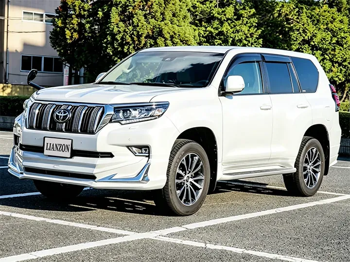

SUV
Family & Business SUVs
Used SUVs sourced to your preferred model year, trim, budget and destination.
Image for reference. Availability, condition and price depend on the specific vehicle and must be confirmed in a written quotation.Request a Quote